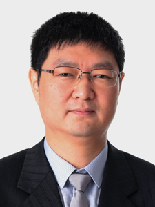

Prof. Kun Zhou
Kun Zhou is a Cheung Kong Professor in the Computer Science Department of Zhejiang University, the Director of the State Key Lab of CAD&CG, and the head of the Graphics and Parallel Systems Lab. I received my BS degree and PhD degree in computer science, both from Zhejiang University. After graduation I spent six years with Microsoft Research Asia, and was a lead researcher of the graphics group before moving back to Zhejiang University. I was named one of the world's top 35 young innovators by MIT Technology Review in 2011, and was elected as an IEEE Fellow in 2015.
Prof. Kun Xu
Prof. Kun Xu is an Associate Professor in the Department of Computer Science and Technology at Tsinghua University. He obtained his PhD degree from the same university in 2009. His research interests include realistic rendering, and visual media editing and construction. He has published more than 20 papers, 10 of which are published on SIGGRAPH or ACM/IEEE Transactions journals. He is an awardee of the second prize of the natural science award of China, and is a winner of the CCF outstanding doctoral dissertation award. He served as the program co-chair of Pacific Graphics 2015.

Prof. Lei Zhang
Lei Zhang s a Full Professor in the Department of Computing, The Hong Kong Polytechnic University. His research interests include Computer Vision, Pattern Recognition, Image and Video Processing, and Biometrics, etc. Prof. Zhang has published more than 200 papers in those areas. As of 2016, his publications have been cited more than 19,000 times in the literature. Prof. Zhang is an Associate Editor of IEEE Trans. on Image Processing, Journal of Electronic Imaging and Image and Vision Computing. He was selected as a "Highly Cited Researcher" by Thomson Reuters, 2015.
Prof. Wenping Wang
Wenping Wang is a Professor and Head of Department in the Department of Computer Science, The University of Hong Kong. Professor Wang conducts research in computer graphics, visualization, and geometric computing and has 120 journal publications in these fields. He has made fundamental research contributions in collision detection, shape modeling and analysis, mesh generation, and architectural geometry. He is journal associate editor of several famous journals and program chair of several international conferences. He received the Outstanding Researcher Award of The University of Hong Kong in 2013.
Prof. Xiangjian He
Xiangjian He is a Professor and the Director of Computer Vision and Pattern Recognition Laboratory at the Global Big Data Technologies Centre (GBDTC) at the University of Technology, Sydney (UTS). He is also the Director of UTS-NPU International Joint Laboratory on Digital Media and Intelligent Networks. He is an IEEE Senior Member and has been an IEEE Signal Processing Society Student Committee member. He has been awarded 'Internationally Registered Technology Specialist' by International Technology Institute (ITI). He has been carrying out research mainly in the areas of image processing, network security, pattern recognition and computer vision in the previous years.